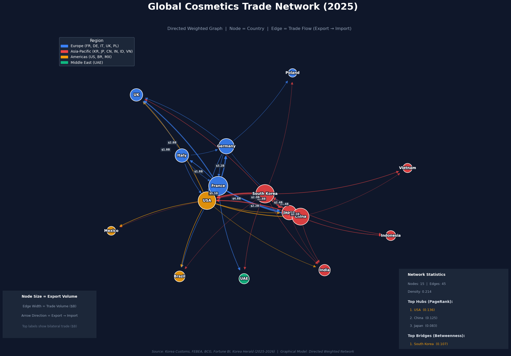
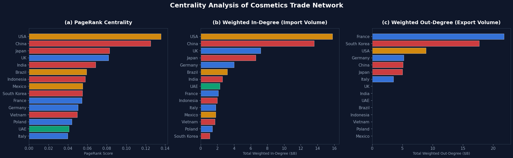
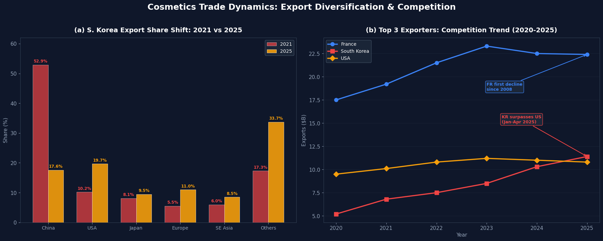
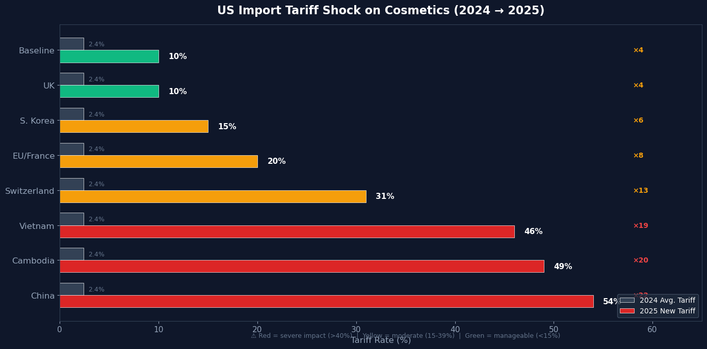

25장 세계 화장품 교역 트렌드#
1. 세계 화장품 교역 최근 트렌드 분석#
Claude 설명#
시장 규모와 성장세#
글로벌 화장품 시장은 2025년 약 3,461억 달러 규모로 추정되며, 2033년까지 5,267억 달러에 이를 것으로 전망되고 있습니다. 연평균 성장률(CAGR)은 약 5.39%입니다. 제품별로는 스킨케어가 전체의 43.4%를 차지하며 가장 큰 비중을 점하고 있고, 최종 소비자 기준으로는 여성이 62.6%를 차지합니다.
지역별 교역 구도 변화#
아시아-태평양의 부상: 아시아태평양 지역은 2025년 기준 전 세계 화장품 시장의 45.5%를 차지하며 최대 시장으로 자리잡았습니다. 또한 2026~2031년 기간 동안 가장 높은 연평균 성장률(7.18%)을 기록할 것으로 예상됩니다.
유럽의 수출 주도: 유럽은 여전히 세계 화장품 수출의 48.4%를 점유하며 수출 시장을 주도하고 있습니다. 특히 프랑스는 세계 최대 뷰티 수출국의 지위를 유지하고 있습니다. 그러나 최근 흐름은 다릅니다. 2025년 프랑스 화장품 수출은 224억 유로로 전년 대비 0.1% 감소하며 2008년 금융위기 이후(코로나 제외) 처음으로 역성장을 기록했습니다. 미국의 관세 장벽과 달러 약세 영향으로 대미 수출이 약 19% 급감한 것이 주요 원인입니다.
K-뷰티의 약진: 한국의 수출 기록 경신#
한국 화장품의 글로벌 교역 확대는 가장 주목할 만한 트렌드입니다.
2025년 한국 화장품 수출은 전년 대비 12.3% 증가한 114.3억 달러를 기록하며 역대 최고치를 경신했습니다. 2025년 1~4월 기준 한국은 미국을 제치고 프랑스에 이은 세계 2위 화장품 수출국으로 올라섰습니다.
교역 대상국도 급속히 다변화하고 있습니다. 한국 화장품은 2025년 202개국에 수출되었으며, 이는 2024년의 172개국에서 크게 늘어난 수치입니다. 특히 수출 1위 시장이 바뀌었다는 점이 눈에 띕니다. 미국이 중국을 제치고 한국 화장품 최대 수출 대상국이 되었으며, 대미 수출은 22억 달러에 달합니다. 반면 대중국 수출은 전년 대비 19.2% 감소하며 비중이 2021년 52.9%에서 큰 폭으로 하락했습니다.
품목별로는 기초 화장품이 85.4억 달러로 전체의 74.7%를 차지했고, 향수 부문이 전년 대비 46.2% 성장하며 가장 높은 증가율을 보였습니다.
관세·무역 장벽: 미국 관세 정책의 충격#
2025년 미국의 관세 정책 변화가 세계 화장품 교역에 큰 파장을 일으키고 있습니다.
수입품이 미국 뷰티 산업 제품 원가의 3분의 2를 차지하는 상황에서, 미국의 뷰티 제품 평균 관세율이 2024년 2.4%에서 무역량 가중 기준 30%까지 급등했습니다. 2025년 4월 5일부터 미국은 화장품을 포함한 거의 모든 수입품에 10% 기본 관세를 부과하기 시작했습니다. 패키징 비용은 2025년 말 ~ 2026년에 걸쳐 5~10% 상승할 것으로 예상되며, 알루미늄 사용 비중이 높은 품목은 더 큰 타격을 받을 전망입니다.
또한 미국 FDA는 2025년 7월부터 800달러 미만 소액 수입품에 적용되던 면세 규정(de minimis)을 폐지하여 모든 화장품 수입에 대해 전면 심사를 실시하고 있습니다. 이는 특히 K-뷰티 브랜드의 소형 택배 수입에 직접적인 영향을 미치고 있습니다.
이에 대한 업계의 대응도 활발합니다. 콜마코리아는 미국 내 두 번째 제조 시설을 완공하며, 관세 부담 없이 미국·유럽·남미 시장을 공략할 준비를 마쳤습니다. 대형 기업들은 자체 공장과 방대한 공급망을 활용해 저관세 국가로 생산을 이전할 수 있지만, 1~2곳의 위탁 제조에 의존하는 소규모 브랜드들은 빠른 전환이 어려워 마진 침식 위험에 노출되어 있습니다.
핵심 교역 트렌드 요약#
정리하면, 현재 세계 화장품 교역은 몇 가지 구조적 변화를 겪고 있습니다. 첫째, K-뷰티의 글로벌 확장과 함께 교역 대상국이 급속히 다변화되고 있고, 둘째, 미국의 보호무역 정책이 프랑스·유럽발 수출을 위축시키는 반면 한국 등 아시아 수출국에는 현지 생산 확대라는 새로운 전략적 대응을 유발하고 있습니다. 셋째, AI 기반 R&D, 맞춤형 제품 추천, 지속가능 패키징 등 기술 혁신과 규제 강화(EU의 포장폐기물 규정, 향료 알레르겐 표시 규정 등)가 교역 구조를 재편하는 동인으로 작용하고 있습니다.
2. 인터랙티브 대시보드#
Claude 제작#
인터랙티브 대시보드를 만들었습니다. 상단 탭을 클릭하면 7개 섹션을 탐색할 수 있습니다.
🔗 세계 화장품 교역 트렌드 분석 (https://claude.ai/public/artifacts/f14d74b5-a567-46da-880d-f6b9e4108225)

포함된 분석 내용:
시장 개요 — 시장 규모 추이 면적 그래프 + 제품군별 표
지역별 교역 — 원형 차트(점유율) + 지역별 성장률 비교표
수출국 경쟁 — 프랑스·한국·미국 수출액 추이 꺾은선 그래프 + 프랑스 역성장 막대 그래프
K-뷰티 심층 — 중국→미국 수출 전환 추이, 품목 구성 원형 차트, 수출 대상국 수 변화 그래프
관세 영향 — 국가별 관세율 변화 수평 막대 그래프 + 영향 항목 상세표
제품·채널 — 점유율 vs 성장률 복합 차트 + 유통채널별 성장률 그래프
2026 전망 — 트렌드 영향력 레이더 차트 + 국가별 전망 요약
3. 화장품 교역 네트워크 그래프#
Claude 분석#
총 4개의 그래프를 생성했습니다. 파이썬 소스 코드도 함께 첨부했습니다.
그림 1 — Trade Network Graph: NetworkX 기반 방향 가중 그래프로, 15개국 간 45개 교역 흐름을 시각화합니다. 노드 크기 = 수출 규모, 엣지 두께 = 교역액, 화살표 = 수출→수입 방향입니다. 우측 하단에 PageRank·Betweenness Centrality 통계도 포함됩니다.

그림 2 — Centrality Analysis: PageRank(허브 중심성), In-Degree(수입 규모), Out-Degree(수출 규모) 3가지 중심성 지표를 비교합니다. 미국이 PageRank 1위(교역 허브), 프랑스·한국이 수출 1~2위입니다.

그림 3 — Trade Dynamics: 한국의 수출 대상국 비중 변화(중국 52.9%→17.6%, 미국 10.2%→19.7%)와 상위 3개 수출국 경쟁 추이를 보여줍니다.

그림 4 — Tariff Impact: 국가별 미국 관세율 변화(2024→2025)를 색상 코드로 심각도를 구분하여 표시합니다.

4. 그래프 이론 소개#
Claude 분석#
그래프 이론(Graph Theory)은 노드(node, 꼭짓점) 와 엣지(edge, 변) 로 이루어진 구조를 연구하는 수학 분야입니다. 사물 간의 관계나 연결을 추상적으로 표현하고 분석하는 데 사용됩니다.
기본 개념#
그래프 G는 G = (V, E) 로 정의됩니다. V는 노드의 집합, E는 엣지의 집합입니다. 예를 들어 앞서 만든 화장품 교역 네트워크에서는 각 국가가 노드이고, 국가 간 교역 흐름이 엣지에 해당합니다.
그래프에는 몇 가지 주요 유형이 있습니다. 무방향 그래프(undirected graph) 는 엣지에 방향이 없어 A-B 관계가 대칭적이고, 방향 그래프(directed graph, digraph) 는 A→B처럼 방향이 있어 수출·수입 같은 비대칭 관계를 표현합니다. 가중 그래프(weighted graph) 는 엣지에 수치(교역액, 거리 등)를 부여한 것이고, 이분 그래프(bipartite graph) 는 노드를 두 그룹으로 나누어 그룹 간에만 엣지가 존재하는 구조입니다.
핵심 지표#
그래프의 성질을 파악하기 위해 여러 지표를 활용합니다. 차수(degree) 는 한 노드에 연결된 엣지의 수이며, 방향 그래프에서는 들어오는 엣지(in-degree)와 나가는 엣지(out-degree)를 구분합니다. 앞서 분석에서 프랑스의 out-degree가 가장 높았던 것은 수출 대상국이 가장 많다는 뜻입니다.
중심성(centrality) 은 네트워크에서 노드의 영향력을 측정합니다. 대표적으로 degree centrality(연결 수 기반), betweenness centrality(중개 역할 정도), PageRank(구글이 웹페이지 순위에 사용한 알고리즘으로 “중요한 노드로부터 많이 연결될수록 중요”) 등이 있습니다. 화장품 교역 분석에서 미국의 PageRank가 가장 높았던 것은 주요 수출국들이 모두 미국으로 수출하는 허브 역할을 하기 때문입니다.
밀도(density) 는 실제 엣지 수를 가능한 최대 엣지 수로 나눈 비율로, 네트워크가 얼마나 촘촘하게 연결되어 있는지를 나타냅니다.
기원과 역사#
그래프 이론의 시작은 1736년 오일러(Euler)의 쾨니히스베르크 다리 문제입니다. “7개의 다리를 각각 정확히 한 번만 건너서 모두 지나갈 수 있는가?”라는 문제를 풀면서 노드와 엣지라는 추상적 표현이 탄생했습니다. 오일러는 이것이 불가능함을 증명했고, 이것이 그래프 이론의 출발점이 되었습니다.
응용 분야#
그래프 이론은 매우 폭넓게 활용됩니다. 소셜 네트워크 분석(사람 간 관계), 교통·물류 경로 최적화, 인터넷·통신 네트워크 설계, 생물학에서의 단백질 상호작용 네트워크, 그리고 앞서 수행한 것처럼 국제 교역 흐름 분석 등이 대표적입니다.
Graphical Model과의 관계#
참고로 Graphical Model은 통계학·머신러닝에서 확률 변수 간의 조건부 의존 관계를 그래프로 표현하는 모델을 별도로 지칭하기도 합니다. 베이지안 네트워크(방향 비순환 그래프)와 마르코프 랜덤 필드(무방향 그래프)가 대표적입니다. 이 경우 노드는 확률 변수, 엣지는 변수 간 의존성을 나타냅니다. 앞서 만든 교역 네트워크는 graph theory 기반의 네트워크 분석에 해당하며, 확률적 graphical model과는 목적이 다릅니다.
5. 분석에 사용한 자료(데이터)의 출처#
Claude 답변#
이 장에서 활용한 데이터의 출처를 정리해 드리겠습니다. 웹 검색을 통해 수집한 자료와, 그 자료를 바탕으로 그래프에 반영한 내용을 구분하여 안내합니다.
시장 규모 및 성장 전망#
Fortune Business Insights — 글로벌 화장품 시장 규모 (USD 354.68B in 2025 → USD 644.17B by 2034, CAGR 6.97%), 지역별 점유율(아시아태평양 40.16%), 남성 화장품 성장률 등 (fortunebusinessinsights.com/cosmetics-market-102614)
Grand View Research — 시장 규모 (USD 330.1B in 2025), 스킨케어 점유율 43.4%, 여성 소비자 비중 62.6%, 아시아태평양 45.5% 점유율, 유럽 CAGR 5.7%, 헤어케어 CAGR 7.4% (grandviewresearch.com/industry-analysis/cosmetics-market)
Mordor Intelligence — 시장 규모 (USD 83.65B cosmetic products 2026), 아시아태평양 CAGR 7.18%, 온라인 채널 CAGR 6.62%, 북미 33.1% 점유율 (mordorintelligence.com/industry-reports/global-cosmetic-products-industry)
ResearchAndMarkets.com (GlobeNewswire) — 시장 규모 (USD 346.1B in 2025 → USD 526.74B by 2033, CAGR 5.39%), 비건 화장품 수요 증가 트렌드 (globenewswire.com/news-release/2026/02/24)
Maximize Market Research (PR Newswire) — 시장 규모 (USD 704.17B by 2032 전망), AI 스킨케어, 클린뷰티 트렌드, 스킨케어 48% 점유율 (prnewswire.com/news-releases/global-cosmetics-market…)
Global Market Estimates — 시장 규모 (USD 380.2B in 2021 → USD 465B by 2026, CAGR 5.5%), 온라인 판매 성장 (globalmarketestimates.com/market-report/global-cosmetics-market-3271)
Statista — 2025년 글로벌 화장품 시장 매출 USD 114.69B(색조화장 한정), 미국 USD 21B, Non-Luxury 78.4% (statista.com/outlook/cmo/beauty-personal-care/cosmetics/worldwide)
지역별 교역 및 수출 경쟁#
Weitnauer Group — 유럽 수출 비중 48.4%, 프랑스 세계 1위 수출국, 맥킨지 인용 중동·아프리카·남미 최고 성장률, 스킨케어 44%+ 점유 (weitnauer.com/trends-in-cosmetics-market-2025-regional-overview)
Global Cosmetics Industry (GCI Magazine) / Circana / NIQ — 미국 프레스티지 뷰티 성장률(10%→7%), 유럽 10.9%, 남미 21.3%, 아시아태평양 3.4%, 인도 시장 데이터 (gcimagazine.com/consumers-markets/article/22887549)
K-뷰티 수출 데이터#
Korea Herald — 2025년 한국 화장품 수출 USD 11.43B(+12.3% YoY), 202개국, 미국 USD 2.2B 1위, 기초화장품 USD 8.54B, 향수 +46.2% (koreaherald.com/article/10652928)
UPI — 2025년 수출 USD 11.43B 역대 최고, 향수 +46.2% (upi.com/Top_News/World-News/2026/01/09)
Personal Care Insights — 한국 세계 3위 수출국 달성(USD 10.28B in 2024, +20.3%), 프랑스 USD 23.26B, 미국 USD 11.2B과의 비교, 172개국 수출, TikTok #kbeautymakeup +85% (personalcareinsights.com/news/k-beauty-global-export-growth-2025.html)
Personal Care Insights — 2025년 1~9월 USD 8.52B(+15.4%), 미국이 중국 추월(19.6% vs 18.6%), 중국 비중 2021년 52.9%→2025년 18.6%, 콜마코리아 미국 공장 (personalcareinsights.com/news/kbeauty-export-record-us-china-shift.html)
KED Global / Korea Customs Service — Q3 수출 USD 3B(+17.6%), 9분기 연속 성장, 205개국, 미국 19.7%·중국 18.5%·일본 9.7% (kedglobal.com/beauty-cosmetics/newsView/ked202510170006)
International Trade Council — 2025년 1~4월 한국 USD 3.61B vs 미국 USD 3.57B, 한국 세계 2위 수출국 등극 (tradecouncil.org/south-korea-becomes-global-trade-leader-in-cosmetics)
Cosmetics Design Asia — 2025년 수출 USD 11.43B, 미국 USD 2.186B(+15.1%), 중국 USD 2.014B(-19.2%), 일본 USD 1.087B(+5%), 기초화장품 74.7%, Olive Young-Sephora 협력 (cosmeticsdesign-asia.com/Article/2026/02/02)
ICTTM — 1~9월 USD 8.52B(+15.4%), 스킨케어 41.7%, 205개국 (icttm.org/korean-cosmetic-exports…)
Buyincellderm (Incellderm) — K-Wave 경제, 미국 온라인 뷰티 매출 56.9%, 기초스킨케어 41.7% (buyincellderm.com/blogs/news/the-k-wave-economy…)
관세 및 무역 장벽#
BCG (Boston Consulting Group) — 미국 뷰티 관세율 2.4%→30%(가중 평균), 수입 비중 66%, 대기업 vs 소규모 브랜드 대응 차이 (bcg.com/publications/2025/navigating-tariffs-in-us-beauty-industry)
Cosmetics Design Europe (FEBEA) — 프랑스 수출 2025년 EUR 22.4B(-0.1%), 2008년 이후 첫 역성장, 대미 수출 -19%(EUR 5.41억 감소), 프랑스 수입 +6%(한국·중국산 증가) (cosmeticsdesign-europe.com/Article/2026/02/09)
BeautyMatter — 소형 브랜드 USD 202B 관세 부담 추정, 패키징 비용 5~10% 상승 전망, 알루미늄 관세 2배 (beautymatter.com/articles/the-202-billion-tariff-problem-facing-small-beauty-brands)
BeautyMatter — FDA de minimis 면세 폐지(2025.7.9), 모든 화장품 수입 전면 심사, K-뷰티 직접 영향 (beautymatter.com/articles/fda-ends-de-minimis-rule-for-beauty-imports)
Cosmetics & Toiletries / CTPA / PCPC — 미국 기본 관세 10%, EU 20%, 중국 54%, 베트남 46% 등 국가별 세율 (cosmeticsandtoiletries.com/regulations/regional/news/22937761)
Cosmetics Design Europe — 면세 원료 목록(아젤라산, 벤조산, 징크옥사이드, 비타민류 등), EU 20%, 스위스 31% (cosmeticsdesign-europe.com/Article/2025/04/04)
GoPlay Cosmetics — 2025.4.5 Liberation Day 관세 10% 기본 적용, 인디 브랜드 영향 (goplaycosmetics.com/blogs)
Cosmetics Business — L’Oréal·Sol de Janeiro 관세 환불 소송(2026.2.23), 미 대법원 IEEPA 관세 위법 판결 (cosmeticsbusiness.com)
Washington Post — Interparfums 등 화장품 기업의 공급망 재편 대응 (washingtonpost.com/technology/2025/05/05)
Cosmetics Design — Pepperdine 교수 인터뷰, 대체 소싱·국내 생산·멕시코/APAC 이전 전략 (cosmeticsdesign.com/Article/2025/04/02)
2026 전망 및 트렌드#
Global Cosmetics News — 2026 예측: 15%+ 관세 영향, AI 상용화, 롱제비티 뷰티, 남아시아 색조화장 부상, M&A(Kenvue-KimberlyClark, Rhode-ELF), EU PPWR 규제 (globalcosmeticsnews.com/2026-predictions-the-future-of-the-global-cosmetics-industry)
모든 데이터는 2025년 5월~2026년 3월 사이에 웹 검색으로 수집한 것이며, 그래프의 일부 수치(예: 국가 간 양자 교역 세부 금액)는 위 출처들의 총량 데이터를 기반으로 비례 추정한 부분이 있습니다.
참고: 파이썬 코드#
"""
세계 화장품 교역 네트워크 그래프 (Graphical Model)
=================================================
2025년 기준 글로벌 화장품 교역 데이터를 바탕으로
방향 가중 그래프(Directed Weighted Graph)로 교역 네트워크를 시각화합니다.
노드: 주요 수출·수입국/지역
엣지: 교역 흐름 (화살표 방향 = 수출→수입, 두께 = 교역 규모)
"""
import networkx as nx
import matplotlib.pyplot as plt
import matplotlib.patches as mpatches
import numpy as np
from matplotlib.patches import FancyBboxPatch
from matplotlib import patheffects
# ──────────────────────────────────────────────
# 1. 폰트 설정
# ──────────────────────────────────────────────
plt.rcParams['font.family'] = 'DejaVu Sans'
plt.rcParams['font.size'] = 11
plt.rcParams['axes.unicode_minus'] = False
# ──────────────────────────────────────────────
# 2. 노드 정의: 주요 교역 국가/지역
# - size: 수출 규모 기반 노드 크기
# - type: exporter / importer / both
# - group: 지역 구분 (색상 매핑용)
# ──────────────────────────────────────────────
nodes = {
"France": {"size": 2800, "type": "exporter", "group": "europe"},
"South Korea": {"size": 2600, "type": "exporter", "group": "asia"},
"USA": {"size": 2400, "type": "both", "group": "americas"},
"Germany": {"size": 1800, "type": "exporter", "group": "europe"},
"Italy": {"size": 1400, "type": "exporter", "group": "europe"},
"Japan": {"size": 1600, "type": "both", "group": "asia"},
"China": {"size": 2200, "type": "both", "group": "asia"},
"UK": {"size": 1200, "type": "both", "group": "europe"},
"India": {"size": 1000, "type": "importer", "group": "asia"},
"UAE": {"size": 800, "type": "importer", "group": "mena"},
"Brazil": {"size": 900, "type": "importer", "group": "americas"},
"Indonesia": {"size": 750, "type": "importer", "group": "asia"},
"Vietnam": {"size": 650, "type": "importer", "group": "asia"},
"Poland": {"size": 550, "type": "importer", "group": "europe"},
"Mexico": {"size": 600, "type": "importer", "group": "americas"},
}
# ──────────────────────────────────────────────
# 3. 엣지 정의: 교역 흐름 (수출국 → 수입국)
# weight = 교역 규모 (억 달러, 상대적 스케일)
# ──────────────────────────────────────────────
edges = [
# 프랑스 수출 (세계 1위, 총 약 224억 유로)
("France", "USA", 5.5),
("France", "China", 3.8),
("France", "Germany", 3.2),
("France", "UK", 2.8),
("France", "Japan", 2.0),
("France", "Italy", 1.8),
("France", "UAE", 1.5),
("France", "Brazil", 1.2),
# 한국 수출 (세계 2위, $114.3억)
("South Korea", "USA", 4.8),
("South Korea", "China", 4.4),
("South Korea", "Japan", 2.4),
("South Korea", "UK", 1.0),
("South Korea", "Vietnam", 1.2),
("South Korea", "Indonesia", 0.9),
("South Korea", "UAE", 0.8),
("South Korea", "India", 0.7),
("South Korea", "Poland", 0.6),
("South Korea", "Brazil", 0.5),
("South Korea", "Mexico", 0.4),
# 미국 수출 (세계 3위, ~$108억)
("USA", "China", 2.2),
("USA", "UK", 1.8),
("USA", "Brazil", 1.5),
("USA", "Japan", 1.2),
("USA", "Mexico", 1.4),
("USA", "India", 0.8),
# 독일 수출
("Germany", "USA", 1.5),
("Germany", "France", 1.2),
("Germany", "UK", 1.0),
("Germany", "Poland", 0.8),
("Germany", "China", 0.7),
# 일본 수출
("Japan", "China", 2.5),
("Japan", "USA", 1.0),
("Japan", "South Korea", 0.6),
("Japan", "Indonesia", 0.5),
("Japan", "India", 0.4),
# 이탈리아 수출
("Italy", "USA", 1.2),
("Italy", "France", 0.9),
("Italy", "Germany", 0.8),
("Italy", "UK", 0.6),
# 중국 수출 (역수출 증가 추세)
("China", "USA", 1.8),
("China", "Japan", 1.0),
("China", "South Korea", 0.5),
("China", "Indonesia", 0.6),
("China", "Vietnam", 0.5),
("China", "India", 0.7),
]
# ──────────────────────────────────────────────
# 4. 그래프 객체 생성
# ──────────────────────────────────────────────
G = nx.DiGraph()
for node, attrs in nodes.items():
G.add_node(node, **attrs)
for src, dst, w in edges:
G.add_edge(src, dst, weight=w)
# ──────────────────────────────────────────────
# 5. 레이아웃: 지리적 직관성을 위한 초기 위치 + 스프링
# ──────────────────────────────────────────────
initial_pos = {
"France": (-0.6, 0.5),
"Germany": (-0.3, 0.7),
"Italy": (-0.4, 0.2),
"UK": (-0.8, 0.8),
"Poland": (-0.1, 0.6),
"South Korea": ( 0.8, 0.4),
"Japan": ( 1.0, 0.6),
"China": ( 0.6, 0.6),
"India": ( 0.4, 0.0),
"Indonesia": ( 0.8, -0.3),
"Vietnam": ( 0.7, -0.1),
"USA": (-0.8, -0.2),
"Brazil": (-0.5, -0.6),
"Mexico": (-0.7, -0.5),
"UAE": ( 0.1, 0.1),
}
pos = nx.spring_layout(G, pos=initial_pos, k=1.8, iterations=80, seed=42)
# ──────────────────────────────────────────────
# 6. 색상·크기 매핑
# ──────────────────────────────────────────────
group_colors = {
"europe": "#3B82F6", # 유럽: 파랑
"asia": "#EF4444", # 아시아: 빨강
"americas": "#F59E0B", # 아메리카: 황금
"mena": "#10B981", # 중동: 초록
}
node_colors = [group_colors[nodes[n]["group"]] for n in G.nodes()]
node_sizes = [nodes[n]["size"] for n in G.nodes()]
# 엣지 두께 정규화 (0.5 ~ 5.0 범위)
edge_weights = [G[u][v]["weight"] for u, v in G.edges()]
max_w, min_w = max(edge_weights), min(edge_weights)
edge_widths = [0.5 + 4.5 * (w - min_w) / (max_w - min_w) for w in edge_weights]
# 엣지 색상: 수출국 그룹 기반 + 반투명
edge_colors = [group_colors[nodes[u]["group"]] + "55" for u, v in G.edges()]
# ──────────────────────────────────────────────
# 7. [그림 1] 메인 네트워크 그래프
# ──────────────────────────────────────────────
fig, ax = plt.subplots(1, 1, figsize=(20, 14), facecolor="#0F172A")
ax.set_facecolor("#0F172A")
fig.suptitle(
"Global Cosmetics Trade Network (2025)",
fontsize=26, fontweight="bold", color="white", y=0.97
)
ax.set_title(
"Directed Weighted Graph | Node = Country | Edge = Trade Flow (Export \u2192 Import)",
fontsize=12, color="#94A3B8", pad=15
)
# 엣지 (곡선 화살표)
nx.draw_networkx_edges(
G, pos, ax=ax, width=edge_widths, edge_color=edge_colors,
arrows=True, arrowsize=15, arrowstyle="-|>",
connectionstyle="arc3,rad=0.1",
min_source_margin=25, min_target_margin=25, alpha=0.7,
)
# 노드 그림자
nx.draw_networkx_nodes(G, pos, ax=ax, node_size=[s*1.15 for s in node_sizes],
node_color="#000000", alpha=0.3)
# 노드 본체
nx.draw_networkx_nodes(G, pos, ax=ax, node_size=node_sizes,
node_color=node_colors, edgecolors="white",
linewidths=1.5, alpha=0.9)
# 라벨 + 외곽선 (가독성 향상)
text_items = nx.draw_networkx_labels(G, pos, ax=ax,
font_size=10, font_weight="bold", font_color="white")
for _, text in text_items.items():
text.set_path_effects([
patheffects.withStroke(linewidth=3, foreground="#0F172A"),
patheffects.Normal()
])
# 상위 12개 교역에 금액 라벨 표시
top_edges = sorted(edges, key=lambda x: x[2], reverse=True)[:12]
for src, dst, w in top_edges:
x1, y1 = pos[src]
x2, y2 = pos[dst]
mx = (x1 + x2) / 2
my = (y1 + y2) / 2
dx, dy = x2 - x1, y2 - y1
mx += -dy * 0.04
my += dx * 0.04
ax.annotate(
f"${w}B", xy=(mx, my), fontsize=7.5, fontweight="bold", color="#E2E8F0",
ha="center", va="center",
bbox=dict(boxstyle="round,pad=0.2", facecolor="#1E293B",
edgecolor="#475569", alpha=0.85, linewidth=0.5),
)
# 범례 (지역별 색상)
legend_patches = [
mpatches.Patch(color="#3B82F6", label="Europe (FR, DE, IT, UK, PL)"),
mpatches.Patch(color="#EF4444", label="Asia-Pacific (KR, JP, CN, IN, ID, VN)"),
mpatches.Patch(color="#F59E0B", label="Americas (US, BR, MX)"),
mpatches.Patch(color="#10B981", label="Middle East (UAE)"),
]
leg = ax.legend(handles=legend_patches, loc="upper left", fontsize=10,
title="Region", title_fontsize=11, facecolor="#1E293B",
edgecolor="#475569", labelcolor="white", framealpha=0.9)
leg.get_title().set_color("white")
# 범례 (설명 박스)
info_ax = fig.add_axes([0.02, 0.05, 0.18, 0.13], facecolor="none")
info_ax.set_xlim(0, 10); info_ax.set_ylim(0, 4); info_ax.axis("off")
bg = FancyBboxPatch((0, 0), 10, 4, boxstyle="round,pad=0.3",
facecolor="#1E293B", edgecolor="#475569", alpha=0.9, linewidth=0.5)
info_ax.add_patch(bg)
info_ax.text(5, 3.4, "Node Size = Export Volume", ha="center", fontsize=10, fontweight="bold", color="white")
info_ax.text(5, 2.6, "Edge Width = Trade Volume ($B)", ha="center", fontsize=9, color="#94A3B8")
info_ax.text(5, 1.8, "Arrow Direction = Export \u2192 Import", ha="center", fontsize=9, color="#94A3B8")
info_ax.text(5, 0.9, "Top labels show bilateral trade ($B)", ha="center", fontsize=8.5, color="#64748B")
# 네트워크 통계 (우측 하단 패널)
stats_ax = fig.add_axes([0.78, 0.02, 0.21, 0.22], facecolor="none")
stats_ax.set_xlim(0, 10); stats_ax.set_ylim(0, 8); stats_ax.axis("off")
sbg = FancyBboxPatch((0, 0), 10, 8, boxstyle="round,pad=0.3",
facecolor="#1E293B", edgecolor="#475569", alpha=0.9, linewidth=0.5)
stats_ax.add_patch(sbg)
# 중심성 지표 계산
pagerank = nx.pagerank(G, weight="weight")
betweenness = nx.betweenness_centrality(G, weight="weight")
top_pr = sorted(pagerank.items(), key=lambda x: x[1], reverse=True)[:3]
top_bw = sorted(betweenness.items(), key=lambda x: x[1], reverse=True)[:3]
stats_lines = [
("Network Statistics", True, "white", 7.3),
(f"Nodes: {G.number_of_nodes()} | Edges: {G.number_of_edges()}", False, "#94A3B8", 6.4),
(f"Density: {nx.density(G):.3f}", False, "#94A3B8", 5.6),
("Top Hubs (PageRank):", True, "#E2E8F0", 4.6),
(f" 1. {top_pr[0][0]} ({top_pr[0][1]:.3f})", False, "#F59E0B", 3.8),
(f" 2. {top_pr[1][0]} ({top_pr[1][1]:.3f})", False, "#94A3B8", 3.0),
(f" 3. {top_pr[2][0]} ({top_pr[2][1]:.3f})", False, "#94A3B8", 2.2),
("Top Bridges (Betweenness):", True, "#E2E8F0", 1.2),
(f" 1. {top_bw[0][0]} ({top_bw[0][1]:.3f})", False, "#F59E0B", 0.4),
]
for txt, bold, col, yy in stats_lines:
stats_ax.text(0.8, yy, txt, fontsize=9 if not bold else 10,
fontweight="bold" if bold else "normal", color=col)
ax.margins(0.12); ax.axis("off")
fig.text(0.5, 0.01,
"Source: Korea Customs, FEBEA, BCG, Fortune BI, Korea Herald (2025-2026) | Graphical Model: Directed Weighted Network",
ha="center", fontsize=9, color="#64748B", style="italic")
plt.show()
# ──────────────────────────────────────────────
# 8. [그림 2] 중심성 분석 (3-panel)
# ──────────────────────────────────────────────
in_degree = dict(G.in_degree(weight="weight"))
out_degree = dict(G.out_degree(weight="weight"))
fig2, axes = plt.subplots(1, 3, figsize=(20, 6), facecolor="#0F172A")
# (a) PageRank 중심성
pr_sorted = sorted(pagerank.items(), key=lambda x: x[1], reverse=True)
axes[0].barh([x[0] for x in pr_sorted][::-1], [x[1] for x in pr_sorted][::-1],
color=[group_colors[nodes[n]["group"]] for n in [x[0] for x in pr_sorted]][::-1],
edgecolor="white", linewidth=0.5, alpha=0.85)
axes[0].set_title("(a) PageRank Centrality", fontsize=14, fontweight="bold", color="white", pad=12)
axes[0].set_xlabel("PageRank Score", fontsize=10, color="#94A3B8")
# (b) Weighted In-Degree (수입 규모)
in_sorted = sorted(in_degree.items(), key=lambda x: x[1], reverse=True)
axes[1].barh([x[0] for x in in_sorted][::-1], [x[1] for x in in_sorted][::-1],
color=[group_colors[nodes[n]["group"]] for n in [x[0] for x in in_sorted]][::-1],
edgecolor="white", linewidth=0.5, alpha=0.85)
axes[1].set_title("(b) Weighted In-Degree (Import Volume)", fontsize=14, fontweight="bold", color="white", pad=12)
axes[1].set_xlabel("Total Weighted In-Degree ($B)", fontsize=10, color="#94A3B8")
# (c) Weighted Out-Degree (수출 규모)
out_sorted = sorted(out_degree.items(), key=lambda x: x[1], reverse=True)
axes[2].barh([x[0] for x in out_sorted][::-1], [x[1] for x in out_sorted][::-1],
color=[group_colors[nodes[n]["group"]] for n in [x[0] for x in out_sorted]][::-1],
edgecolor="white", linewidth=0.5, alpha=0.85)
axes[2].set_title("(c) Weighted Out-Degree (Export Volume)", fontsize=14, fontweight="bold", color="white", pad=12)
axes[2].set_xlabel("Total Weighted Out-Degree ($B)", fontsize=10, color="#94A3B8")
# 축 스타일 통일
for a in axes:
a.set_facecolor("#0F172A")
a.tick_params(colors="#94A3B8")
for spine in a.spines.values():
spine.set_color("#334155")
fig2.suptitle("Centrality Analysis of Cosmetics Trade Network",
fontsize=18, fontweight="bold", color="white", y=1.02)
plt.tight_layout()
plt.show()
# ──────────────────────────────────────────────
# 9. [그림 3] 한국 수출 다변화 + 수출국 경쟁 추이
# ──────────────────────────────────────────────
fig3, (ax3a, ax3b) = plt.subplots(1, 2, figsize=(18, 7), facecolor="#0F172A")
# (a) 한국 수출 대상국 비중 변화 (2021 vs 2025)
cats = ["China", "USA", "Japan", "Europe", "SE Asia", "Others"]
v21 = [52.9, 10.2, 8.1, 5.5, 6.0, 17.3]
v25 = [17.6, 19.7, 9.5, 11.0, 8.5, 33.7]
x = np.arange(len(cats)); w = 0.35
b1 = ax3a.bar(x - w/2, v21, w, label="2021", color="#EF4444", alpha=0.7, edgecolor="white", linewidth=0.5)
b2 = ax3a.bar(x + w/2, v25, w, label="2025", color="#F59E0B", alpha=0.9, edgecolor="white", linewidth=0.5)
for bar_set, col in [(b1, "#EF4444"), (b2, "#F59E0B")]:
for bar in bar_set:
h = bar.get_height()
ax3a.text(bar.get_x() + bar.get_width()/2, h + 0.8, f"{h}%",
ha="center", fontsize=8.5, color=col, fontweight="bold")
ax3a.set_title("(a) S. Korea Export Share Shift: 2021 vs 2025", fontsize=14, fontweight="bold", color="white", pad=12)
ax3a.set_ylabel("Share (%)", fontsize=11, color="#94A3B8")
ax3a.set_xticks(x); ax3a.set_xticklabels(cats, fontsize=10)
ax3a.set_ylim(0, 62); ax3a.set_facecolor("#0F172A"); ax3a.tick_params(colors="#94A3B8")
ax3a.legend(fontsize=10, facecolor="#1E293B", edgecolor="#475569", labelcolor="white")
for spine in ax3a.spines.values(): spine.set_color("#334155")
# (b) 상위 3개 수출국 경쟁 추이 (2020-2025)
years = [2020, 2021, 2022, 2023, 2024, 2025]
ax3b.plot(years, [17.5, 19.2, 21.5, 23.3, 22.5, 22.4], "o-", color="#3B82F6", lw=2.5, ms=8, label="France")
ax3b.plot(years, [5.2, 6.8, 7.5, 8.5, 10.3, 11.4], "s-", color="#EF4444", lw=2.5, ms=8, label="South Korea")
ax3b.plot(years, [9.5, 10.1, 10.8, 11.2, 11.0, 10.8], "D-", color="#F59E0B", lw=2.5, ms=8, label="USA")
# 주요 이벤트 주석
ax3b.annotate("KR surpasses US\n(Jan-Apr 2025)", xy=(2025, 11.4), xytext=(2023.3, 15),
fontsize=9, fontweight="bold", color="#EF4444",
arrowprops=dict(arrowstyle="->", color="#EF4444", lw=1.5),
bbox=dict(boxstyle="round,pad=0.3", facecolor="#1E293B", edgecolor="#EF4444", alpha=0.9))
ax3b.annotate("FR first decline\nsince 2008", xy=(2025, 22.4), xytext=(2023, 18.5),
fontsize=9, fontweight="bold", color="#3B82F6",
arrowprops=dict(arrowstyle="->", color="#3B82F6", lw=1.5),
bbox=dict(boxstyle="round,pad=0.3", facecolor="#1E293B", edgecolor="#3B82F6", alpha=0.9))
ax3b.set_title("(b) Top 3 Exporters: Competition Trend (2020-2025)", fontsize=14, fontweight="bold", color="white", pad=12)
ax3b.set_ylabel("Exports ($B)", fontsize=11, color="#94A3B8")
ax3b.set_xlabel("Year", fontsize=11, color="#94A3B8")
ax3b.set_facecolor("#0F172A"); ax3b.tick_params(colors="#94A3B8")
ax3b.legend(fontsize=10, facecolor="#1E293B", edgecolor="#475569", labelcolor="white")
ax3b.grid(axis="y", color="#1E293B", linewidth=0.5)
for spine in ax3b.spines.values(): spine.set_color("#334155")
fig3.suptitle("Cosmetics Trade Dynamics: Export Diversification & Competition",
fontsize=18, fontweight="bold", color="white", y=1.02)
plt.tight_layout()
plt.show()
# ──────────────────────────────────────────────
# 10. [그림 4] 관세 영향 차트
# ──────────────────────────────────────────────
fig4, ax4 = plt.subplots(figsize=(14, 7), facecolor="#0F172A")
ax4.set_facecolor("#0F172A")
# 관세율 데이터 (2024 평균 vs 2025 적용)
tariff_countries = ["China", "Cambodia", "Vietnam", "Switzerland", "EU/France", "S. Korea", "UK", "Baseline"]
tariff_2024 = [2.4, 2.4, 2.4, 2.4, 2.4, 2.4, 2.4, 2.4]
tariff_2025 = [54, 49, 46, 31, 20, 15, 10, 10]
y = np.arange(len(tariff_countries))
h = 0.35
bars_old = ax4.barh(y + h/2, tariff_2024, h, label="2024 Avg. Tariff", color="#334155", edgecolor="white", linewidth=0.5)
bars_new = ax4.barh(y - h/2, tariff_2025, h, label="2025 New Tariff", edgecolor="white", linewidth=0.5,
color=["#DC2626" if t >= 40 else "#F59E0B" if t >= 15 else "#10B981" for t in tariff_2025])
# 값 라벨
for bar, val in zip(bars_new, tariff_2025):
ax4.text(bar.get_width() + 1, bar.get_y() + bar.get_height()/2, f"{val}%",
va="center", fontsize=11, fontweight="bold", color="white")
for bar, val in zip(bars_old, tariff_2024):
ax4.text(bar.get_width() + 0.5, bar.get_y() + bar.get_height()/2, f"{val}%",
va="center", fontsize=9, color="#64748B")
# 증가 배수 표시
for i, (old, new) in enumerate(zip(tariff_2024, tariff_2025)):
mult = new / old
ax4.text(58, y[i], f"\u00d7{mult:.0f}", fontsize=10, fontweight="bold",
color="#EF4444" if mult >= 15 else "#F59E0B", va="center")
ax4.set_yticks(y); ax4.set_yticklabels(tariff_countries, fontsize=12)
ax4.set_xlabel("Tariff Rate (%)", fontsize=12, color="#94A3B8")
ax4.set_title("US Import Tariff Shock on Cosmetics (2024 \u2192 2025)",
fontsize=16, fontweight="bold", color="white", pad=15)
ax4.legend(fontsize=10, facecolor="#1E293B", edgecolor="#475569", labelcolor="white", loc="lower right")
ax4.tick_params(colors="#94A3B8")
ax4.set_xlim(0, 65)
for spine in ax4.spines.values(): spine.set_color("#334155")
# 심각도 범례 주석
ax4.text(35, -1.2, "\u26a0 Red = severe impact (>40%) | Yellow = moderate (15-39%) | Green = manageable (<15%)",
fontsize=9, color="#64748B", ha="center")
plt.tight_layout()
plt.show()



